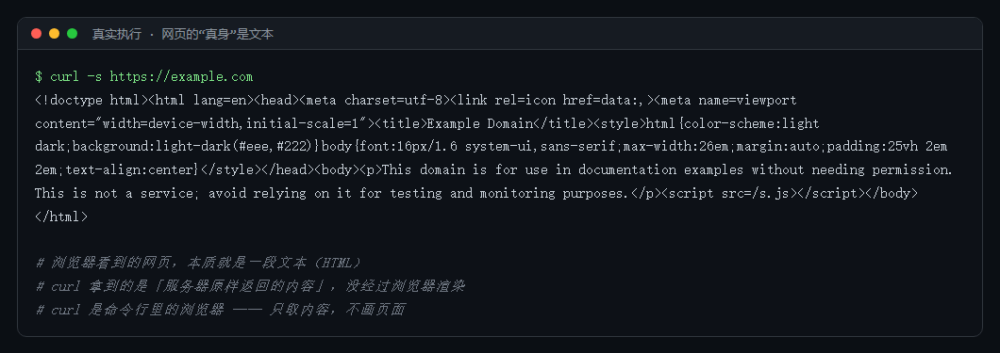
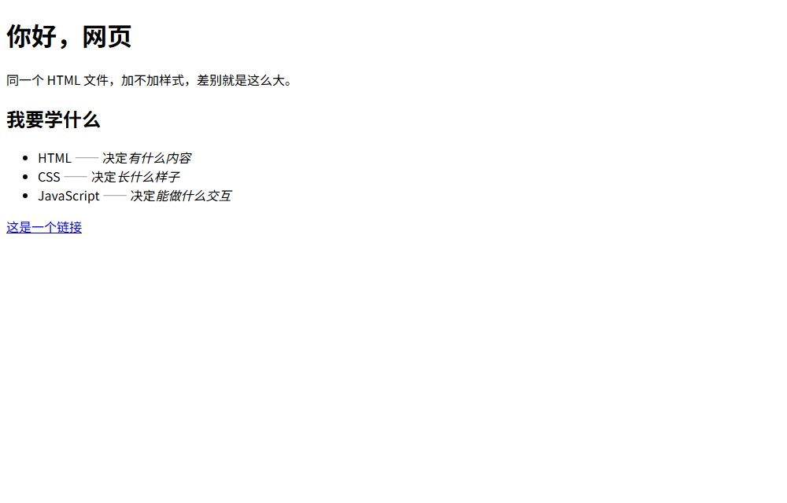
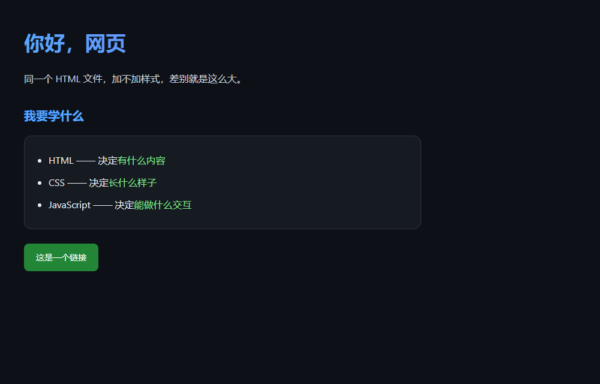

Web 网页
🟢 截图都是真实的：源码用 curl 抓、页面用浏览器真渲染
0 网页到底是什么
一句话：浏览器把一堆文本，画成了一个界面。
| 技术 | 管什么 | 类比身体 |
|---|---|---|
| HTML | 有什么内容（标题、段落、图片、链接） | 骨架 |
| CSS | 长什么样子（颜色、大小、位置） | 皮肤和衣服 |
| JavaScript | 能做什么（点击、计算、请求数据） | 肌肉和神经 |
🧠 三句话记住：HTML 是内容，CSS 是样子，JS 是行为。
网页不是"画"出来的，是你写文本、浏览器负责渲染。
网页不是"画"出来的，是你写文本、浏览器负责渲染。
1 从网址到页面
① 你在地址栏敲 https://example.com 回车
② DNS 把域名解析成 IP（见「计算机网络」章）
③ 建立 TCP + TLS 连接
④ 发 GET / HTTP/1.1 请求
⑤ 服务器返回 HTML 文本（就是下面那张图的内容）
⑥ 浏览器解析 HTML，发现还要 CSS / JS / 图片
⑦ 再发一堆请求把这些要回来
⑧ 把 HTML + CSS 画成你看到的页面，JS 开始执行交互💡 所以一个网页通常不是一个请求，而是几十上百个请求。
打开 F12 的 Network 面板刷新一下，你就看到了。
打开 F12 的 Network 面板刷新一下，你就看到了。
2 HTML：骨架
不用下载任何东西，命令行就能看到网页的真身。

真实执行：curl 抓取 example.com 返回的原始内容
1
<!DOCTYPE html> 声明这是 HTML5
2
<head> 里放"给人看之前先设置"的东西（标题、编码、引用的 CSS）
3
<body> 里放你在页面上真正看到的内容
4
标签几乎都是成对的：<p>内容</p>，少数自闭合如 <img>、<br>
| 标签 | 作用 |
|---|---|
<h1>~<h6> | 标题（1 最大） |
<p> | 段落 |
<a href="..."> | 链接 |
<img src="..."> | 图片 |
<ul><li> | 无序列表 / 列表项 |
<div> / <span> | 块级 / 行内容器（用来布局和套样式） |
3 CSS：样式（差别有多大，看图）
同一个 HTML 文件，加不加 CSS，是两个世界。
❌ 只有 HTML，没有任何样式：

真实渲染：浏览器默认样式（黑字白底）
✅ 同一个 HTML，加上 CSS：

真实渲染：同一份内容，只多了一段 <style>
/* 选择器 { 属性: 值; } */
body {
background: #0d1117; /* 背景色 */
color: #e6edf3; /* 文字颜色 */
font-size: 16px;
padding: 40px;
}
h1 { font-size: 34px; } /* 选所有 h1 */
.card { border-radius: 12px; } /* 选 class="card" 的元素 */
#main { width: 900px; } /* 选 id="main" 的元素 */| 写法 | 选什么 | 优先级 |
|---|---|---|
h1 | 所有 h1 标签 | 低 |
.card | class="card" | 中 |
#main | id="main"（页面里唯一） | 高 |
🎨 新手别自己配色。抄现成的：Tailwind、Bootstrap，或直接用
ui-ux-pro-max 这类工具生成配色方案。4 JavaScript：交互
让页面能"动"：点击、校验、发请求、实时更新。
// 页面里的 JS 写在 <script> 里
<button id="btn">点我</button>
<p id="out"></p>
<script>
document.getElementById("btn").addEventListener("click", () => {
document.getElementById("out").textContent = "你点了我！";
});
</script>| 要做的事 | 大致怎么写 |
|---|---|
| 选中元素 | document.querySelector("#btn") |
| 改文字 | el.textContent = "新内容" |
| 监听点击 | el.addEventListener("click", fn) |
| 发请求 | fetch("/api/data").then(r => r.json()) |
⚠️ JS 在你的浏览器里运行，用户能看到全部代码。所以绝不能把密码、密钥写在 JS 里。
5 F12 开发者工具
这是前端最重要的工具，没有之一。按 F12 或右键 →「检查」。
| 面板 | 能干什么 | 最常用场景 |
|---|---|---|
| Elements | 看/改当前页面的 HTML 和 CSS | 调布局、改颜色试效果 |
| Console | 看报错、直接敲 JS | 页面不动了先看这里有没有红色报错 |
| Network | 看所有请求：URL、状态码、耗时、响应 | 查接口失败、看谁拖慢了页面 |
| Sources | 看 JS 源码、打断点 | 调试逻辑 |
| Application | 看 Cookie、localStorage 缓存 | 登录态没了、缓存问题 |
🔍 最实用的一招：Network 面板 → 勾选 Preserve log → 刷新页面 → 按状态码排序 → 看哪个请求是红的（4xx / 5xx）。
⚠️ 在 Elements 里改的东西刷新就没了——它只是临时预览，不是真的改文件。
6 写一个能跑的网页（3 分钟）
不用装任何东西。记事本 + 浏览器就能开始。
1
新建文件 hello.html（注意后缀是 .html，不是 .txt）
2
把下面的代码粘进去，保存
3
双击这个文件，浏览器就打开了
<!DOCTYPE html>
<html lang="zh-CN">
<head>
<meta charset="UTF-8">
<title>我的第一个网页</title>
<style>
body { font-family: sans-serif; max-width: 640px;
margin: 40px auto; line-height: 1.8; }
h1 { color: #1f6feb; }
.box { background: #f6f8fa; padding: 16px;
border-radius: 10px; border: 1px solid #d0d7de; }
</style>
</head>
<body>
<h1>你好，网页</h1>
<p>这是我写的第一个页面。</p>
<div class="box">
<ul>
<li>HTML 管内容</li>
<li>CSS 管样子</li>
<li>JS 管交互</li>
</ul>
</div>
<button onclick="alert('你好！')">点我</button>
</body>
</html>✅ 成功标志：双击后看到一个带蓝色标题的页面，按钮点了会弹窗。
7 静态 / 动态 / 前后端
| 类型 | 是什么 | 例子 |
|---|---|---|
| 静态页面 | 写死的 HTML 文件，谁访问都一样 | 这个教程本身 |
| 动态页面 | 服务器每次现算，内容因人而异 | 淘宝首页、你的订单页 |
| 单页应用 SPA | 一个 HTML，全靠 JS 换内容 | 大部分后台管理系统 |
用户浏览器（前端） 服务器（后端）
HTML/CSS/JS ←──→ Python/Node/Java
负责显示和交互 负责数据、逻辑、数据库
↑
MySQL / Redis| 前端做什么 | 后端做什么 |
|---|---|
| 页面长什么样、怎么交互 | 数据存哪、怎么算、权限够不够 |
| 发请求给接口 | 提供接口 /api/xxx |
| 代码用户全看得见 | 代码用户看不见，可以放密钥 |
💡 前端主要三门（HTML/CSS/JS）+ 一个框架（Vue 或 React）。后端选一门语言就行，Python（Django/FastAPI）或 Node 上手最快。
8 新手常踩的坑
① 文件后缀是 .txt 不是 .html。Windows 默认隐藏扩展名，改名其实变成了
hello.html.txt。要在"查看 → 文件扩展名"里打开。② 中文乱码。忘了写
<meta charset="UTF-8">，或者文件保存成了 GBK。③ 图片不显示。路径错（相对/绝对）、文件名大小写、或者图片根本没放在同一目录。
④ 改了代码没变化。
Ctrl + F5 强制刷新，绕过缓存。⑤ 页面打开是空白。先按 F12 看 Console 有没有红色报错——九成是 JS 报错中断了渲染。
🚫 别把敏感信息写进前端：API key、数据库密码、token。打开 F12 谁都能看到。
✅ 学习顺序建议：HTML → CSS → JS 基础 → 用 F12 看懂别人的页面 → 再学框架。